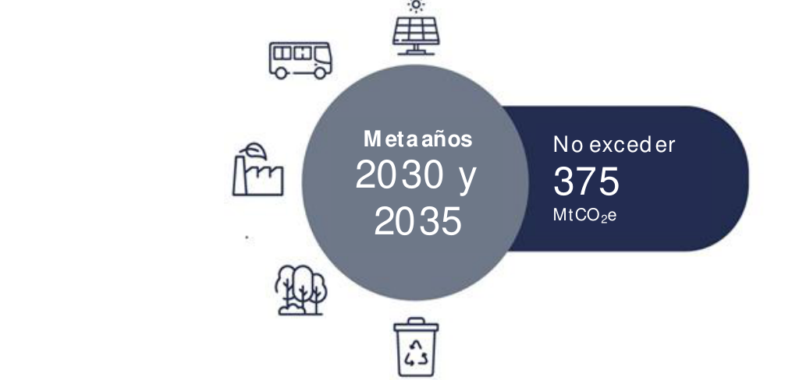
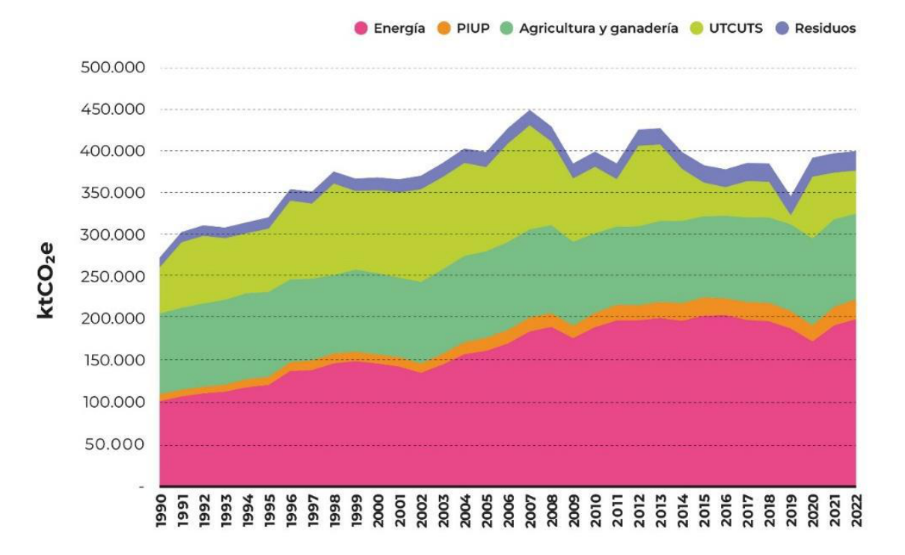
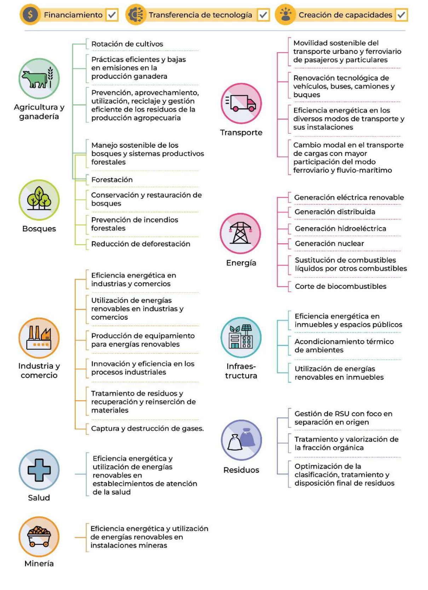
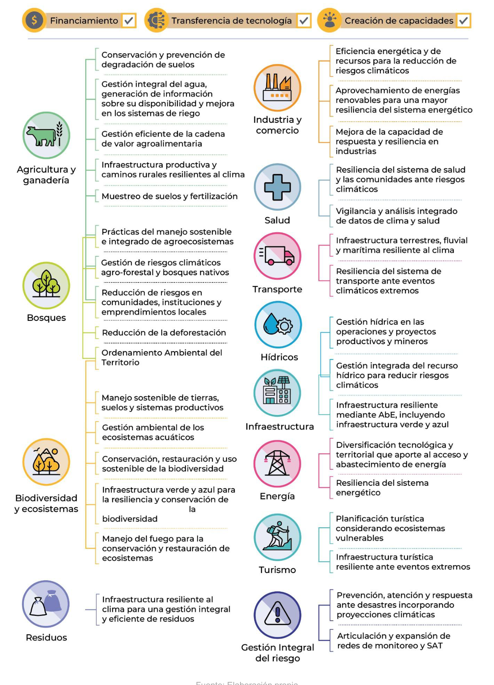
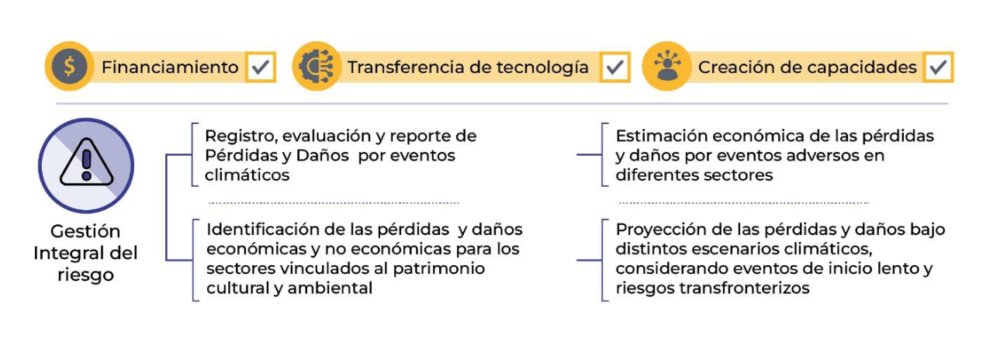

The Argentine Republic, as developing country, is a Party to the United Nations Framework Convention on Climate Change (UNFCCC), its Kyoto Protocol and its Paris Agreement, therefore this document is develop within the framework of the principle of common but differentiated responsibilities and respective capabilities in the participation of international cooperation actions.
In preparing the Third Nationally Determined Contribution (NDC) of the Argentine Republic, a balanced approach has been prioritized, ensuring clear synergies between mitigation, adaptation, and means of implementation. Furthermore, loss and damage is recognized as the third pillar of climate action. This approach is developed taking into account national circumstances and priorities as well as respective capabilities, inherent to their condition as a developing country.
The Argentine Republic submitted its First Biennial Transparency Report (BTR1) to the UNFCCC in December 2024, elaborated in accordance with the requirements of the Enhanced Transparency Framework (ETF) of the Paris Agreement. The BTR1 includes the most recent estimate of greenhouse gas (GHG) emissions and removals corresponding to 2022, which amounts to 401 MtCO₂e. It also provides the GHG estimation for the entire historical time series for the period 1990–2022.
In the Third NDC, the Argentine Republic includes a mitigation component that updates and adjusts its target not to exceed the net emission of 375 MtCO₂e in 2030, and commits to maintaining net emissions below this same level (375 MtCO₂e) in 2035. Both targets for 2030 and 2035 cover the entire national territory2, considering all gases and emission source and sink categories reported in the BTR1.
Additionally, to support understanding, the NDC includes Information for Clarity, Transparency, and Understanding (ICTU).
The Argentine Republic presents this Third NDC as a realistic and achievable commitment, aligned with its priorities of sustained economic growth and national development, within the framework of the Paris Agreement. The targets allow an effective decoupling of emissions and prosperity, prioritizing private initiative and economic freedom.
The NDC proposes a 2035 net emissions target that does not exceed the level established for 2030, implying a change that separates the emissions trajectory from projected economic growth and national development. In addition, emission projections remain below the historical peak recorded in the 2007 National GHG Inventory. Finally, the targets represent approximately 1% of projected global emissions, compatible with the Paris Agreement's target trajectories. The contribution is considered to be consistent with Argentina's historical contribution.
The adaptation target maintains the ambition level established in the Second NDC for 2030, while strengthening transparency for tracking progress. This 2030 target is structured around five key strategic dimensions guiding national action: assessment of impacts and adaptation measures, stakeholders' engagement, reduction of vulnerability, consideration of contexts with most risk exposure, and generation of environmental and economic co-benefits.
The means of implementation constitute to this Third NDC, the support to be provided to developing countries in the form of finance, technology transfer, and capacity building, in accordance with the principles and Articles 3, 4.5, 9, 10, and 11 of the Paris Agreement. The NDC highlights that these are essential resources for the effective implementation of climate action measures.
Additionally, the NDC recognizes the complementary role of cooperation mechanisms and international financing, prioritizing private investment opportunities and voluntary carbon markets or similar initiatives that promote efficiency and national growth based on solid foundations without conditions.
The following national circumstances are relevant to the process of development, implementation and fulfillment of the Third Nationally Determined Contribution (NDC).
With regard to the structure of government, the Argentine Republic is a representative, republican and federal state. Its political structure comprises 24 subnational jurisdictions — 23 provinces and the Autonomous City of Buenos Aires (CABA) — organized in turn into more than 500 sub-jurisdictional divisions. These enjoy political and administrative autonomy and have concurrent powers in key areas such as development, the environment, energy and land-use planning. This federal organization gives public action an intrinsically decentralized character, requiring permanent intergovernmental coordination for the effective implementation of policies.
The Argentine Republic is located in the southern part of the American continent and holds sovereignty rights over the Argentine Antarctic Sector, defined by latitude 60° South and the South Pole, and meridians 25° and 74° West longitude. The total area of the country is 3,669,711 km², of which more than 76% corresponds to the continental American portion (including the Malvinas, South Georgia and South Sandwich Islands) and approximately 24% to the Antarctic continent portion (including the South Orkney Islands)3 16.
By continental extension, the Argentine Republic ranks fourth among the American countries and eighth internationally. Due to its vast and diverse territory, it encompasses multiple geographical, climatic and productive regions. Argentina’s territory can be divided into 18 ecoregions4, making it one of the countries with the greatest biogeographical diversity in the world, in both flora and fauna. The wide environmental heterogeneity fosters the development of significant biodiversity and high levels of endemism.
The Argentine Republic has 576 protected areas (46 million hectares, 16.6% of the national continental territory), 85 of which are under national jurisdiction, including 2 marine protected areas.
Due to the great extent of its territory, the Argentine Republic has very varied climatic characteristics, including arid and cold regions in the west and south, while the centre and north have temperate and warm regions. The arid diagonal crosses the Argentine territory from the northwest to the southeast, leaving the most humid regions in the northeast. The main conditioning factors of the climate system are the presence of the Andes mountain range, the influence of the oceans and latitude.
The breadth and territorial heterogeneity of the country translate into a great diversity of ecosystems, natural resources and productive structures, which generate both opportunities and challenges for their management.
The country is characterized by a broad and complex diversity of zones highly susceptible to the impacts of extreme climatic events, prolonged droughts, forest fires and frequent floods; these constitute growing threats to natural and productive systems.
The different regions present differentiated realities in terms of resource availability, infrastructure and institutional capacities. This diversity demands a comprehensive vision that combines development and productivity while taking into account local conditions.
Regarding Argentina’s demographic profile, according to the last census, the population reached 45.8 million people in 202213. This shows a growing trend, at an average annual rate of 11.7 per thousand inhabitants6 compared to the previous 2010 census. The Argentine population is highly concentrated in urban and metropolitan areas7, with more than 90% of its inhabitants residing in them (Census 2010). Approximately 40% of the total is concentrated in the Buenos Aires Metropolitan Area (AMBA, which includes CABA and 39 districts of the Province of Buenos Aires), which represents only 0.4% of the country’s total area8. This configuration, where large rural areas of the interior maintain lower density and more limited access to infrastructure and services, poses structural challenges of connectivity and regional integration.
Poverty and extreme poverty indicators improved substantially in the last two years as a result of the economic programme implemented since December 2023. According to INDEC data9, poverty fell from 41.7% in December 2023 to 28.2% in the second half of 2025, while extreme poverty fell from 11.9% to 6.3% in the same period.
In terms of employment, according to the Permanent Household Survey (EPH)10, in the first quarter of 2026, the activity rate reached 48.6%, the employment rate stood at 44.8% and the unemployment rate was 7.8% across the 31 urban agglomerations surveyed.
Regarding the economic and productive profile, the Argentine economy has a diversified structure, with agro-industrial, energy, industrial and services sectors standing out. The great endowment of natural resources, human capital and a developed productive fabric constitute strategic assets for driving competitiveness and technological innovation.
The Argentine Republic has abundant and diverse natural resources. Its vast extensions of fertile land and the development of agricultural and livestock production chains sustain the production of food and biofuels. The main export complex is the soy complex, followed in order of importance by the petroleum-petrochemical complex and, in third place, the automotive industry.
In terms of extensive crop production, increasingly conservative practices are being implemented, such as direct sowing, crop rotation and the incorporation of cover crops, all supported by scientific evidence demonstrating their contribution to improving soil structure, increasing water infiltration and retention capacity, and maintaining or increasing organic matter content.
The country has significant reserves of gas, strategic minerals and metals, necessary for the energy transition, considering fuel substitution, renewable energy generation, affordable energy supply and sustainable transport. These energy resources, especially natural gas, confer an essential role as a supplier of a transition fuel that facilitates energy supply with a lower carbon intensity on an international scale.
In this way, the Argentine Republic positions itself as a key actor given its relevance as an exporter of strategic commodities. Its capacity to produce and export food and biofuels has the potential to contribute directly to the stability of global supply. Due to its geographical and climatic characteristics, Argentina has a high potential for renewable energy generation, with good levels of solar radiation in the northwest region and appropriate winds in the Patagonian region, to which is added significant potential for hydrogen production. However, technological and productive heterogeneity, as well as infrastructure and logistics gaps in regions far from urban or port centres, currently pose challenges for regional competitiveness.
Climate action by the Argentine Republic is developing within the framework of a process of stabilization and transformation of the national economy, aimed at restoring the sustainability of public accounts, reducing inflation, strengthening conditions for investment and recovering the foundations for sustained growth. In this context, the National Government has prioritized fiscal consolidation, the normalization of markets and the improvement of efficiency in the allocation of public resources.
This comprehensive process of macroeconomic stabilization and ordering of public accounts seeks to correct the accumulated imbalances on the fiscal, monetary and foreign exchange fronts, which in recent decades contributed to generating significant distortions that limited growth and led to economic stagnation. At the same time, structural reforms are being promoted in the tax, labour and regulatory areas, aimed at dismantling accumulated distortions, simplifying the functioning of the economy and improving resource allocation, generating more predictable and favourable conditions for private investment, with the objective of consolidating stability, strengthening competitiveness and restoring confidence in the economic order.
The structural reform agenda is underpinned by Decree 70/2023 "Bases for the Reconstruction of the Argentine Economy" and Law No. 27,742 "Foundations and Starting Points for the Freedom of Argentines", which establish the normative foundations of the new regulatory framework aimed at promoting economic efficiency, trade openness and private investment. As of June 2026, the deregulation process has involved 689 measures adopted and 2,699 regulations modified or repealed, along with the modification or elimination of 16,178 total normative articles, which has allowed progress in simplifying the regulatory framework, reducing administrative burdens and facilitating a more agile environment for economic activity and private investment.
Another important component of the economic programme is the Large Investment Incentive Regime (RIGI), designed to promote large-scale projects in strategic sectors, such as energy, mining and infrastructure, providing predictability, legal certainty and stable conditions for long-term investment. Added to this is the promotion of the "Super RIGI" initiative, aimed at promoting new high-value-added industries and emerging technologies through enhanced incentives for transformative investments, as well as the RIMI (Medium Investment Incentive Regime), focused on strengthening the productive development of SMEs and regional value chains, broadening the scope of the investment promotion scheme throughout the Argentine economy.
Macroeconomic stabilization constitutes an enabling condition for sustaining and strengthening climate action in the medium and long term. The reduction of fiscal imbalances, the improvement of the regulatory framework, the normalization of the energy sector and the strengthening of conditions for investment contribute to generating a more conducive environment and greater participation of the private sector in the transformation of productive processes.
Argentina promotes climate action consistent with its national capacities, its economic and social circumstances, and its development. It seeks to maximize the impact of available resources, as well as to favour international financing and the mobilization of resources needed for investment projects, including mitigation, adaptation and resilience projects.
Despite progress, Argentina still faces challenges typical of a developing economy, associated with structural limitations in terms of access to financing, productivity and access to capital, which condition the pace of the productive and energy transition. In this context, it is necessary to continue strengthening international cooperation, mobilizing private investment and broadening access to concessional financing, in line with its development priorities.
The improvement of productive efficiency can contribute simultaneously to economic growth and more efficient use of resources, promoting climate action, development and competitiveness. This process implies a review of the priorities and implementation plans for mitigation and adaptation measures, to respond to efficiency and sustainability criteria for public policies.
In line with this, Argentina is working on updating its mitigation and adaptation measures, with the aim of adapting them to the new economic, technological and sectoral conditions of the country and strengthening their consistency with the commitments established in its Third Nationally Determined Contribution (NDC 3.0). This process will allow a review of the prioritization of measures, strengthening monitoring and evaluation mechanisms and promoting greater participation of the private sector and different levels of government.
The environmental legal framework of the Argentine Republic is based on a system of federal nature, whose cornerstone is Article 41 of the National Constitution, reformed in 1994, which enshrines the right of all inhabitants to a healthy and balanced environment, and links it to the principle of sustainable development. The National Congress is empowered to enact laws on minimum environmental protection standards, while the provinces are empowered to enact the necessary norms to complement them, without altering local jurisdictions. The constitution also recognizes the original ownership of natural resources by the provinces and the Autonomous City of Buenos Aires.
The General Environment Law No. 25,675, of 2002, establishes a general framework, principles and environmental instruments for the whole country. This is complemented by eleven laws that regulate specific matters with the character of minimum standards throughout Argentina. Among them is the law on minimum standards of adaptation and mitigation, approved in December 2019 by Law No. 27,520 and regulated in 2020 through Regulatory Decree No. 1,030.
The aforementioned Law No. 27,520 recognizes the principle of common but differentiated responsibilities and establishes a governance framework through a National Cabinet (GNCC). Furthermore, with the aim of promoting the transparency of climate information, it creates the National Climate Information System (SNIC), which centralizes data and information from national executive branch agencies for compliance with the law and related international agreements.
At the international level, the Argentine Republic has historically participated continuously in international negotiations on environmental matters. As a result, it has ratified numerous international conventions and treaties, reflecting its commitment to collective action to address issues of international concern.
This international legal framework includes, in addition to the ratification of the United Nations Framework Convention on Climate Change, its Kyoto Protocol and its Paris Agreement, the Convention on Biological Diversity (CBD), the United Nations Convention to Combat Desertification (UNCCD), the Ramsar Convention, the Montreal Protocol, the Sendai Framework, among others that are relevant and establish synergies for addressing mitigation and adaptation through the implementation of their specific strategies and plans at the national level.
Law No. 27,520 establishes the governance framework through a National Cabinet (GNCC), which acts as an efficient coordination body to align climate actions with the priorities of economic freedom and private development.
The law establishes the following composition of the GNCC:
Likewise, the law establishes an External Advisory Council (CAE), composed of experts in the various aspects of the climate issue and representatives from different sectors and groups.
The Technical Administrative Coordination (CTA) of the GNCC is exercised by the highest authority responsible for the subject. It is in charge of preparing inputs for the working bodies of the GNCC, promoting the planning of adaptation and mitigation actions and preparing reports in fulfilment of international commitments. It also convenes, facilitates and promotes communication between the spaces that make up the GNCC.
This document was prepared through coordination among all the bodies of the GNCC.
Additionally, the Federal Environment Council (COFEMA), created in 1990, is the permanent body for the concertation and elaboration of a coordinated environmental policy between the provinces, the Autonomous City of Buenos Aires, and the National Government.
COFEMA, through technical working commissions, promotes and coordinates environmental management instruments throughout the country. In this context, the development of Provincial Response Plans stands out, carried out by each jurisdiction in compliance with Article 20 of Law No. 27,520, encompassing the generation of adaptation and mitigation diagnostics, targets and measures that reflect the specificities of each province and allow for the enhancement of national plan efforts, in a continuous process of support for capacity building.
The Argentine Republic shall not exceed net emissions of 375 MtCO₂e in 2030. In 2035, net emissions shall be maintained without exceeding 375 MtCO₂e. Both targets cover the entire national territory12, considering all gases and emission source and sink categories reported in the BTR111, submitted to the UNFCCC in December 2024, together with the corresponding National Inventory Report (NIR)14, estimated in accordance with the 2006 IPCC Guidelines and their 2019 Refinement.

Argentina’s contribution to international efforts is based on the best available science, as detailed in item 6 of Table 1, ICTU.
It is important to note that both the UNFCCC and its Paris Agreement establish that Parties that are developed countries should take the lead through the provision and mobilization of new and additional financial resources for the implementation of climate actions by developing countries.
In turn, the Argentine Republic reaffirms the principle of common but differentiated responsibilities and respective capabilities, as referenced in Article 7 of the Rio Declaration of 1992, Article 3 of the UNFCCC and the preamble of the Paris Agreement.
In this sense, the policies and actions aimed at fulfilling the mitigation targets will always be implemented by prioritizing mechanisms that incentivize investment, technological innovation and economic efficiency, considering the international cooperation mechanisms established within the UNFCCC framework as an additional and relevant source of financing, as long as they do not interfere with economic growth. Additionally, access to the technology development and transfer mechanisms and capacity-building mechanisms created or to be created by the UNFCCC and its Paris Agreement will be required.
Law No. 27,520 creates the National Climate Information System (SNIC) as a central tool for transparency and information promotion. In December 2024, the Argentine Republic submitted the First Biennial Transparency Report (BTR1) to the UNFCCC, prepared in accordance with the Enhanced Transparency Framework (ETF) of the Paris Agreement and following the Modalities, Procedures and Guidelines (MPGs) in the annex to Decision 18/CMA.1.
In accordance with requirements and national circumstances, the BTR1 is organized into 6 chapters: 1) National Greenhouse Gas Inventory (NGHGI), 2) Tracking progress on NDC implementation, 3) Adaptation, 4) Support required and received, 5) Flexibilities and improvements, and 6) Loss and damage. In addition, the BTR1 includes the Common Tabular Formats (CTF) established in Decision 5/CMA.3.
Together with the BTR1, the National Inventory Report (NIR) 1990–2022 of GHG emissions and removals of the Argentine Republic was submitted. This report was developed taking into account the currently applicable guidelines for the preparation of national inventories and in accordance with the MPGs of the ETF for action and support referred to in Article 13 of the Paris Agreement, established in Annex V of Decision 5/CMA.3. The report also includes GHG emissions in the Common Reporting Tables (CRT) for the electronic communication of the information contained in the NIR, in accordance with the provisions of Annex I of Decision 5/CMA.3.
The most recent GHG emissions estimate from Argentina’s Inventory corresponds to the year 2022, and emissions were estimated at 401 MtCO₂e.
Total emissions for 2022 are explained primarily by the restoration of activity levels in the Energy and Industrial Processes and Product Use (IPPU) sectors, together with a decrease in deforestation compared to 2020 reflected in the Land Use, Land-Use Change and Forestry (LULUCF) sector.

Considering that the target applies to all sectors of the economy, the Argentine Republic has a series of actions and measures aimed at implementing and fulfilling the NDC. Consistent with the country’s emissions profile, the reported mitigation measures relate to the Energy, Agriculture and LULUCF sectors. In particular, progress is reported on the implementation of measures related to: electricity generation from non-conventional renewable sources connected to the grid, biofuel blending, hydroelectric generation, nuclear generation, energy efficiency, distributed electricity generation, off-grid electricity generation, sustainable transport, afforestation, avoided deforestation of native forests, sustainable management, conservation, restoration and recovery of native forests, and fire prevention.
Progressively, the Argentine Republic is advancing in the design and implementation of instruments that seek to maintain the stability of the energy system, strengthen the security of domestic supply and promote the development of its strategic productive sectors, including actions related to sustainable agricultural production and the efficient management, conservation and restoration of native forests, within a framework of competitiveness and ensuring national economic recovery.
|
Information for Clarity, Transparency and Understanding of the Third NDC of the Argentine Republic |
|
|
The following sub-section presents the Information for Clarity, Transparency and Understanding (ICTU), in compliance with Article 4.8 of the Paris Agreement and with the provisions of paragraph 7 of Decision 4/CMA.1 and the requirements of its Annex I. Table 1. Information for Clarity, Transparency and Understanding of the Third NDC of the Argentine Republic |
|
|
1. Quantifiable information on the reference point(s) (including, as applicable, a base year): |
|
|
a) Reference year(s), base year(s), reference periods or other starting points; b) Quantifiable information on the reference indicator(s), their values in the respective reference year(s), base year(s), reference period(s) or other starting point(s), and, as applicable, in the target year(s); c) For strategies, plans and actions referred to in Article 4, paragraph 6, of the Paris Agreement, or policies and measures as components of nationally determined contributions where paragraph 1(b) above is not applicable, Parties to provide other relevant information; d) Target relative to the reference indicator, expressed numerically, for example in percentage or amount of reduction; |
a) The Third NDC of the Argentine Republic presents an update of the target for 2030 and a target for 2035. Both targets are absolute, so they do not use a reference year or period and cover all sectors of the economy. b) The Third NDC presents an absolute target for all sectors of the economy, so it does not have a reference indicator. The progress tracking indicator for the NDC will be the annual net emissions reported in subsequent National Greenhouse Gas Inventories (NGHGIs). c) Not applicable to the Argentine Republic. d) Not applicable to the Argentine Republic as the Third NDC does not have a reference indicator. |
|
e) Information on sources of data used to quantify the reference indicator(s); |
Not applicable to the Argentine Republic as the Third NDC does not have a reference indicator. |
|
f) Information on the circumstances under which the Party may update the values of the reference indicators. |
The Argentine Republic has an absolute target for 2035, and an update of the absolute target for 2030, covering all sectors of the economy, so there is no reference indicator. Both targets will be updated on the basis of the continuous improvement process for estimating GHG emissions and removals. The continuous improvement process includes:
These improvements will be reflected in subsequent BTRs and NCs, allowing for greater accuracy, quality and transparency of the NGHGIs. |
|
2. Time frames and/or periods for implementation: |
|
|
a) Time frame and/or period for implementation, including start and end dates, consistent with any further relevant decision adopted by the Conference of the Parties serving as the meeting of the Parties to the Paris Agreement (CMA); b) Whether it is a single-year or multi-year target, as applicable. |
a) The implementation period runs from 1 January 2021 to 31 December 2035. b) The Third NDC of the Argentine Republic presents an update of the target for 2030 and a target for 2035. |
|
3. Scope and coverage: |
|
|
a. General description of the target; |
The Argentine Republic shall not exceed net emissions of 375 MtCO₂e in 2030. In 2035, net emissions shall be maintained without exceeding 375 MtCO₂e. |
|
b. Sectors, gases, categories and pools covered by the nationally determined contribution, including, as applicable, information on whether the Party intends to include emissions or removals from land use, land-use change and forestry in its nationally determined contribution; c. How the Party has taken into account paragraph 31(c) and (d) of decision 1/CP.21; d. Mitigation co-benefits resulting from adaptation actions and/or economic diversification plans, including description of specific projects, measures and initiatives of Parties’ adaptation actions and/or economic diversification plans. |
b–c. Both targets include all categories and gases reported in the BTR1 and the corresponding NIR, in which all sectors and categories/subcategories of emission sources and sinks that occur in the country and for which information has been obtained were incorporated. Tables 64, 179, 298, 736 and 876 of the NIR indicate the methodology by category and sector of the NGHGI. In addition, tables 28 and 29 of the NIR present an explanation of the unestimated categories and the categories included in other categories. d. The development of specific methodologies for the quantification of mitigation co-benefits is under evaluation. |
|
4. Planning processes: a) Information on planning processes that the Party has undertaken to prepare its nationally determined contribution and, if available, on the Party’s implementation plans, including, as appropriate: |
|
|
i. National institutional arrangements, public participation and engagement with local communities and indigenous peoples, in a gender-responsive manner15; |
The process of preparing the Third NDC was developed within the working framework of the GNCC. The GNCC was created by Law No. 27,520 and its Regulatory Decree No. 1030/2020, as the national governance body for the coordinated and consensual design of adaptation and mitigation actions. In the process of preparing the Third NDC, various meetings were held, including: 1 Ministerial Meeting, 2 Focal Points Tables, 1 Provincial Articulation Table and 1 Extended Table. Likewise, multiple meetings and exchanges with stakeholders were held. In this way, the Third NDC was prepared through exchanges in different working spaces, allowing articulation between different areas of the national government, provincial jurisdictions, representatives of the private sector, civil society organizations, universities and other academic entities. The implementation of the Third NDC will be carried out within the framework of the GNCC. |
|
ii. Contextual matters, including, inter alia, as appropriate: national circumstances, best available science and review processes; country-specific mitigation ambition; existing policies and measures; |
The institutional arrangements are essential for the preparation of the Third NDC by providing the working environment with the corresponding implementing bodies and relevant stakeholders. In turn, the preparation process for this NDC drew on the planning experience of the Second NDC and was developed thanks to the technical capacities built over successive reporting cycles under the UNFCCC and its Paris Agreement. |
|
c. Other contextual aspirations and priorities recognized when joining the Paris Agreement; |
Argentina emphasizes the importance of having mechanisms that facilitate access to financing, technology and capacity building, to be provided by developed countries, in fulfillment of commitments assumed under the UNFCCC, the Kyoto Protocol and its Paris Agreement, in accordance with the principle of common but differentiated responsibilities. In this context, the country maintains continuous participation in multilateral forums. |
|
b) Information specific applicable to Parties, including regional economic integration organizations and their member States, that have agreed to act jointly under Article 4, paragraph 2, of the Paris Agreement, including the Parties that have agreed to act jointly and the terms of the arrangement; |
Not applicable to the Argentine Republic. |
|
c) How the Party has taken into account the results of the global stocktake pursuant to Article 4, paragraph 9, of the Paris Agreement; |
In preparing the Third NDC of the Argentine Republic, the results of the first Global Stocktake (GST) of Decision 1/CMA.5 were taken into account. Argentina’s mitigation efforts contribute, in the light of national capacities and circumstances, to electricity generation through renewable energy sources; to the conservation, protection and restoration of ecosystems; and to the adoption of good practices aimed at energy efficiency, the conservation and sustainable use of natural resources and the circular economy, as one of several approaches in promoting sustainable production and consumption. Furthermore, the Third NDC includes the ICTU in accordance with paragraph 168 of the first GST and Article 4.8 of the Paris Agreement, and has a target with an end date in 2035 in accordance with paragraph 2 of Decision 6/CMA.3 and paragraph 170 of the first GST. In addition, both targets in this NDC include all sectors of the economy in accordance with paragraph 39 of the first GST and Article 4.4 of the Paris Agreement, and are fair and ambitious, as detailed in items 6a and 6b, in line with Article 4.3 of the Paris Agreement and paragraph 167 of the first GST. |
|
Each Party with a nationally determined contribution that encompasses mitigation co-benefits, as referred to in Article 4, paragraph 7, of the Paris Agreement shall provide information on: |
|
|
i. How the economic and social consequences of response measures have been considered when developing the nationally determined contribution; |
In the process of preparing the Third NDC of the Argentine Republic, within the framework of the GNCC of Law No. 27,520, consideration was given to the benefits generated by the proposed measures in various areas, in addition to GHG mitigation. Furthermore, the need for means of implementation in the areas of financing, technology and capacity building to undertake adaptation and mitigation actions is recognized. In that sense, it is considered important to address the specific needs and concerns of developing countries arising from the economic and social impact of the application of response measures, in line with Article 4.8 of the UNFCCC and Article 4.15 of the Paris Agreement. |
|
ii. The specific projects, measures and activities that will be carried out to contribute to mitigation co-benefits, including information on adaptation plans that also produce mitigation co-benefits, which may include, among others, key sectors such as energy resources, water resources, coastal resources, human settlements and urban planning, agriculture and forestry; as well as economic diversification measures, which may include, among others, sectors such as industry and manufacturing, energy and mining, transport and communications, construction, tourism, the real estate sector, agriculture and fishing. |
Not evaluated in the Third NDC of the Argentine Republic. |
|
5. Assumptions and methodological approaches, including those for estimating and accounting for anthropogenic greenhouse gas emissions and removals: |
|
|
a. The assumptions and methodological approaches used to account for anthropogenic greenhouse gas emissions and removals corresponding to the Party’s nationally determined contribution, consistent with decision 1/CP.21, paragraph 31, and with the accounting guidance adopted by the CMA; |
The Third NDC of the Argentine Republic will follow, for the accounting of its target, an NGHGI-based approach for the estimation of anthropogenic GHG emissions and carbon dioxide removals, in accordance with the 2006 IPCC Guidelines and the 2019 Refinement, and consistent with the requirements of Decision 4/CMA.1. |
|
b. The assumptions and methodological approaches used to account for the implementation of policies and measures or strategies in the nationally determined contribution; |
The monitoring of the implementation of both targets established in the Third NDC will be carried out through the NGHGI, reported in subsequent BTRs and NCs. The robustness and transparency of the NGHGI and the domestic monitoring of mitigation measures will be carried out through the National System of Climate Information, created through Article 17 of Law No. 27,520. |
|
c. If applicable, information on how the Party will take into account existing methods and guidance under the Convention to account for anthropogenic emissions and removals, in accordance with Article 4, paragraph 14, of the Paris Agreement, as applicable; |
The Argentine Republic uses the 2006 IPCC Guidelines and their 2019 Refinement for NGHGIs in order to estimate all categories that occur in the country and for which information has been obtained. In this way, the quality principles for inventory preparation proposed by the IPCC regarding completeness, transparency, consistency, comparability and accuracy are met. |
|
d. The IPCC methodologies and metrics used for estimating anthropogenic greenhouse gas emissions and removals; |
For the Third NDC, the Global Warming Potential (GWP-100) with the values from the IPCC’s Fifth Assessment Report is used as a metric, without prejudice to updating it in the future in accordance with Decision 18/CMA.1 (paragraph 37). |
|
e. Sector-, category- or activity-specific assumptions, methodological approaches and values, consistent with IPCC guidance, as appropriate, including, as applicable: |
|
|
i. The approach used to address emissions and subsequent removals from natural disturbances on managed lands; ii. The approach used to account for emissions and removals from harvested wood products; iii. The approach used to address the effects of age-class structure in forests; |
i. Not applicable to the Argentine Republic, as these were not estimated in the NGHGI reported in the BTR1. ii. Emissions and removals resulting from harvested wood products were estimated following the production approach, established in Decision 18/CMA.1, paragraph 56. iii. Not applicable to the Argentine Republic, as these were not estimated in the NGHGI reported in the BTR1. |
|
f. Other assumptions and methodological approaches used for understanding the nationally determined contribution and, if applicable, estimating corresponding emissions and removals, indicating: |
|
|
i. How the reference indicators, baselines and/or reference levels, including, where applicable, sector-, category- or activity-specific reference levels, are constructed, including, for example, key parameters, assumptions, definitions, methodologies, data sources and models used; |
The Third NDC of the Argentine Republic has an absolute target for all sectors of the economy; it was not built on baselines and does not have a reference indicator; however, the methodological assumptions and approaches for the transparency of this document are specified in this item. Within the GNCC framework, emissions and removals projections were coordinated by the Under-Secretariat for the Environment and carried out in conjunction with the technical teams of the implementing bodies, who provided information for the modelling of explanatory variables. These account for the major changes in GHG emission levels in the different sectors of the country, including: population, gross domestic product, energy demand and supply, cattle livestock, agricultural production and land-use change. The projection of both targets was made using a simplified model consistent with the methodology and emission and absorption sources estimated in the NGHGI 2022 reported in the BTR1 in December 2024. The NIR of the BTR1 contains the description of the methodology and emission factors used in the modelling. Each sector of the NGHGI was modelled separately and the results were then integrated. It should be noted that the 2030 target (Second NDC) was updated to reflect the methodological, scope and coverage improvements of the NGHGI in the BTR1, as well as the evolution of national circumstances and the implementation of current measures. In this sense, the improvements made to the NGHGI relate to the update of GWP values, moving from values of the Second (AR2) to the Fifth (AR5) IPCC Assessment Report; the use of emission factors from the 2019 Refinement of the 2006 IPCC Guidelines; and the inclusion of previously unestimated categories, among others. Thus, the methodology for developing the 2030 and 2035 targets of the Third NDC of the Argentine Republic is consistent and comparable with the latest NGHGI submitted to the UNFCCC. |
|
ii. For Parties with nationally determined contributions that contain components other than greenhouse gases, information on the assumptions and methodological approaches used in relation to those components, as applicable; iii. For climate forcers included in nationally determined contributions that are not covered by IPCC guidelines, information on how climate forcers are estimated; iv. Any technical additional information, if necessary; |
ii. Not applicable to the Argentine Republic. iii. Not applicable to the Argentine Republic. iv. Not applicable to the Argentine Republic. |
|
g. The intention to use voluntary cooperation under Article 6 of the Paris Agreement, if applicable. |
The Argentine Republic considers that carbon markets (Article 6) may constitute an additional and relevant source of financing as long as they do not interfere with economic growth. The country expresses its intention to participate in bilateral, regional or multilateral cooperation mechanisms, including those based on results and the transfer of emission reductions, under a transparent approach compatible with national development priorities. For domestic implementation, Argentina will reserve the sovereign right to establish its own domestic regulations and rules, within the framework of the GNCC, to ensure that any transaction or project under Article 6 avoids double counting, preserves socio-environmental integrity and effectively contributes to national mitigation and adaptation objectives. |
|
6. How the Party considers that its nationally determined contribution is fair and ambitious in the light of its national circumstances: |
|
|
a. How the Party considers its nationally determined contribution to be fair and ambitious in the light of its national circumstances; |
The Argentine Republic understands that an approach to the concepts of equity, fairness and ambition must be made in the light of its national circumstances and on the basis of the principle of common but differentiated responsibilities and respective capabilities. |
|
b. Fairness considerations, including reflecting on equity; |
Given that policies and measures to address climate change must take into account the circumstances of each country and be aligned with national development priorities, it is considered that the Third NDC of the Argentine Republic is fair, equitable and ambitious, as:
|
|
c. How the Party has addressed Article 4, paragraph 3, of the Paris Agreement; |
The Third NDC of the Argentine Republic (based on BTR1) represents a progression from the Second NDC (based on BUR3), in terms of level of transparency. The targets were constructed using a model based on the NGHGI 2022 reported in the BTR1, which represents greater robustness and comprehensiveness compared to the NGHGI 2016 included in the BUR3. The qualitative improvements achieved are reflected in:
Furthermore, the inclusion of ICTU information continues in line with Decision 4/CMA.1. |
|
d. How the Party has addressed Article 4, paragraph 4, of the Paris Agreement; e. How the Party has addressed Article 4, paragraph 6, of the Paris Agreement. |
d. The targets included in the Third NDC of Argentina are absolute, including all sectors of the economy. e. Not applicable to the Argentine Republic. |
|
7. How the nationally determined contribution contributes towards achieving the objective of the Convention as stated in its Article 2: |
|
|
a. How the nationally determined contribution contributes towards achieving the objective of the Convention as stated in its Article 2; b. How the nationally determined contribution contributes towards the implementation of Article 2, paragraph 1(a), and Article 4, paragraph 1, of the Paris Agreement. |
The Third NDC of the Argentine Republic contributes to the objectives of Article 2 of the Convention, Article 2, paragraph 1(a), and Article 4, paragraph 1, of the Paris Agreement, in the light of national capacities and circumstances. In this sense, the country contributes to the stabilization of GHG concentration in the atmosphere by ensuring food security, the energy transition and allowing sustainable development in the long term, subject to the means of implementation needed to implement it. |
The Argentine Republic presents the 2030 adaptation target:
“By 2030, Argentina’s climate actions will have increased adaptive capacity, strengthened resilience and reduced the vulnerability of different actors, and will have built capacities that enable them to respond to the challenges it entails. This process will be based on the best available scientific knowledge and could generate mitigation co-benefits.”
The Argentine Republic, in terms of adaptation, will seek to strengthen the planning, implementation and monitoring processes that underpin its climate actions, in line with Law No. 27,520, commitments assumed under the UNFCCC and its Paris Agreement, deepening, within the framework of its national priorities, action aimed at reducing the vulnerability of the population, ecosystems and productive systems to climate impacts.
The 2030 adaptation target is structured around five strategic dimensions guiding national action: the assessment of climate impacts and adaptation measures; coordination with relevant stakeholders; the reduction of vulnerabilities; the consideration of contexts with greater risk exposure; and the generation of environmental and economic co-benefits.
The target and its dimensions reflect the three components of the Global Goal on Adaptation (GGA), which are increasing adaptive capacity, strengthening resilience and reducing vulnerability.
This target requires progress towards a review of adaptation measures, aimed at considering the new conditions and needs of the country. This process involves an evaluation and update of the measures in the National Plan under Law 27,520, as well as its monitoring and implementation evaluation mechanisms.
The Argentine Republic is a developing country particularly vulnerable to the adverse effects of climate risks under Article 7, paragraph 2, of the PA, and in accordance with Article 4, paragraph 8, of the UNFCCC, as it has: low-lying coastal areas; arid and semi-arid areas; areas with forest cover and areas prone to forest deterioration; areas prone to disasters; areas prone to drought and desertification; and areas of fragile ecosystems, including mountain ecosystems. It faces a wide diversity of climate risks that result from the interaction of factors such as its territorial extent, the variety of ecosystems and its productive structure.
Observed trends show a sustained increase in mean temperature and alterations in precipitation patterns, as well as a greater recurrence of extreme events, such as floods and droughts, with significant economic impact on the country.
These transformations generate differentiated consequences by region and sector, with significant effects on agricultural production, water resources, energy, health and infrastructure.
Since the submission of its Second NDC, the Argentine Republic has evolved towards an approach that integrates climate risk and public and private efforts towards development-oriented resilience. In this regard, Argentina has strengthened its technical and analytical expertise to address climate impacts, increasing adaptive capacity, strengthening resilience and reducing vulnerability.
In terms of knowledge generation and use, the country has strengthened its scientific-technical base and climate information systems, consolidating key capacities for informed decision-making. In this regard, the update and new presentation of SIMARCC19 stands out, an interactive public access platform that allows visualizing the exposure, vulnerability and risk of different regions to climate threats, also facilitating the identification of priority areas for the implementation of adaptation actions. This constitutes a substantial advance in the availability and use of geospatial information for risk management.
Progress has also been made in updating climate projections and in developing new studies that improve understanding of future threats and their expected impacts in different regions of the country. These include updates to variables such as changes in temperature, precipitation and extreme events; studies on sea level identify the most vulnerable coastal areas; projections for the Andes mountain range show temperature increases and changes in precipitation; the Aridity Index projects the expansion of drylands; and the update of the Social Vulnerability Index to Disasters, incorporating information from the National Population, Household and Housing Census (2022), which allows a more up-to-date and detailed characterization of the conditions that affect exposure to extreme climate events. These efforts have contributed to consolidating a more robust, evidence-based approach to adaptation planning.
The SIMARCC platform, together with the update of regional and sectoral studies on climate vulnerability, contributed to identifying critical areas and integrating scientific knowledge into planning processes. This evidence-based approach supports decision-making and international cooperation.
These adaptation support needs are developed in the means of implementation section of the NDC.
Third Nationally Determined Contribution (NDC)
The Argentine Republic faces growing challenges arising from the intensification and recurrence of climate impacts, which generate loss and damage (L&D) with economic, social and environmental consequences throughout the territory20.
These effects, in many cases, exceed the adaptive capacity of the population and ecosystems, and affect strategic sectors of national development.
In this context, the country recognizes the need to prevent, minimize and address associated loss and damage, in line with Article 8 of the Paris Agreement.
The recognition of loss and damage as the third pillar of climate action constitutes a decisive step towards consolidating a coherent, long-term action framework.
The Argentine Republic has initiated a progressive process to strengthen the institutional and technical approach to loss and damage. While progress has been recorded in the area of institutional articulation to facilitate the implementation of activities aimed at this task, the need for international support to deepen assessments corresponding to various sectors is evident.
Likewise, this implies promoting effective coordination between national and provincial actors to generate information that enables registration and evaluation, with the aim of providing a comprehensive and coherent response to climate impacts.
Among the activities developed, the improvement in the availability and accessibility of information necessary for more effective management of climate impacts and risks stands out, together with the development of methodologies appropriate to the national reality, the improvement of climate and socioeconomic information systems and capacity building.
National efforts are aligned with the conclusions of the first Global Stocktake and with the decisions adopted within the framework of the Conference of the Parties serving as the meeting of the Parties to the Paris Agreement (CMA), which aim to strengthen coherence between climate action, disaster risk reduction, humanitarian assistance and post-impact recovery. In this sense, the Argentine Republic promotes an approach that articulates mitigation, adaptation and loss and damage.
The effective fulfillment of climate commitments by developing countries, in the light of their national circumstances and priorities, depends on the provision of new, additional, adequate, predictable and accessible means of implementation, encompassing climate finance, technology transfer and capacity building, fundamental pillars recognized by the UNFCCC and reaffirmed by its Paris Agreement, within the framework of the principle of common but differentiated responsibilities and respective capabilities.
Among the strategic priorities of provincial jurisdictions, two stand out: on the one hand, achieving jurisdictional and regional funds and actions that allow compliance with what is required under Article 20 of Law No. 27,520 and, on the other, strengthening local institutional and technical capacities in each jurisdiction.
In relation to the private sector, it is recognized that it plays a key role, as, operating in a free market, it helps to solve environmental problems through the mobilization of resources and the implementation of innovative initiatives and solutions, generating large-scale transformative changes. Its contribution is essential not only for the achievement of national goals, but also for the economic development of the country. However, they face various barriers and needs to carry out their activities in a competitive and economically sustainable manner.
In turn, civil society organizations and the scientific-academic sector play a fundamental role, enabling the improvement and broadening of the scope of innovative responses to climate actions. They also allow the identification and characterization of needs, priorities and required means. In this regard, these entities emphasize the importance of directing efforts towards strengthening local and institutional capacities, ensuring access to climate financing and appropriate technologies for action in vulnerable regions.
There is thus a shared vision regarding the relevance of the means of implementation as an enabling condition for climate action and generators of economic and environmental co-benefits throughout the territory.
In this framework, the Argentine Republic reaffirms the importance of accessing international mechanisms for financing, technology transfer and capacity building, especially those created — or to be created — within the framework of the UNFCCC and its Paris Agreement.
It also recognizes the opportunities that arise from participation in bilateral, regional or multilateral cooperation mechanisms, and maintains that, in the context of Article 6 of the Paris Agreement, carbon markets can constitute an additional and relevant source of financing.
Additionally, Argentina also emphasizes the need to combine multilateral, regional and bilateral mechanisms, as well as public and private sources. These should be implemented with concessional international financing schemes, direct grants among others, to channel investments towards strategic sectors and towards the provinces and CABA.
Multilateral funds — such as the Green Climate Fund (GCF), the Global Environment Facility (GEF) and the Adaptation Fund — must continue to ensure regional distribution criteria, accessibility and predictability.
Furthermore, it is important to mention that the Argentine Republic systematizes and reports information on required and received support in terms of international cooperation with greater disaggregation in the Biennial Transparency Report cycles, based on a robust and transparent methodology that allows for continuous and consistent monitoring.
An initial, non-binding and non-exhaustive analysis of the main sectoral climate action areas is presented below, for which relevant stakeholders identify needs for concessional international financing, technology transfer and capacity building.
In particular, the need to strengthen concessional and grant financing flows for mitigation and adaptation measures stands out, strategically addressing national priorities and ensuring an effective and sustained response from the various sectors at national and subnational level. To this end, the mobilization of resources should seek to achieve a greater balance between mitigation and adaptation, pursuant to the provisions of Article 9 of the Paris Agreement. In turn, the importance of having adequate and predictable means of implementation to prevent, minimize and address loss and damage from climate impacts is emphasized.
Taking the above into account, needs for financing, technology transfer and capacity building are identified, encompassed in the sectors and areas of action detailed in the following illustrations.
Across these sectors and areas of action, the importance of strengthening instruments and tools for monitoring and tracking the implementation of actions, as well as the development of climate information tools, is highlighted. In the latter case, the need to overcome gaps such as the lack of systematic and updated climate information is recognized.
Finally, the need to strengthen capacity building and training, in line with Article 12 of the Paris Agreement, is highlighted.



|
2CA Second Adaptation Communication (Segunda Comunicación de Adaptación) |
|
|
AMBA Buenos Aires Metropolitan Area (Área Metropolitana de Buenos Aires) |
|
|
AP Paris Agreement (Acuerdo de París) |
|
|
AR2 Second Assessment Report of the IPCC / Segundo Informe de Evaluación del IPCC |
|
|
AR5 Fifth Assessment Report of the IPCC / Quinto Informe de Evaluación del IPCC |
|
|
AR6 Sixth IPCC Assessment Report / Sexto Informe de Evaluación del IPCC |
|
|
BTR1 First Biennial Transparency Report |
|
|
CABA Autonomous City of Buenos Aires (Ciudad Autónoma de Buenos Aires) |
|
|
CAE External Advisory Council (Consejo Asesor Externo) |
|
|
CBD Convention on Biological Diversity (Convenio sobre la Diversidad Biológica) |
|
|
CMA Conference of the Parties serving as the meeting of the Parties to the Paris Agreement |
|
|
CMNUCC United Nations Framework Convention on Climate Change (CMNUCC in Spanish) |
|
|
CN National Communication (Comunicación Nacional) |
|
|
COFEMA Federal Environment Council / Consejo Federal de Medio Ambiente |
|
|
CRT Common Reporting Tables / Tablas Comunes de Reporte |
|
|
CTA Technical Administrative Coordination (Coordinación Técnica Administrativa) |
|
|
CTF Common Tabular Formats / Formatos Comunes Tabulares |
|
|
ETF Enhanced Transparency Framework / Marco de Transparencia Reforzado |
|
|
GCF Green Climate Fund / Fondo Verde para el Clima |
|
|
GEF Global Environment Facility / Fondo Mundial para el Medio Ambiente |
|
|
GGA Global Goal on Adaptation (Objetivo Global de Adaptación) |
|
|
GHG Greenhouse Gas (Gas de Efecto Invernadero — GEI) |
|
|
GNCC National Climate Change Cabinet (Gabinete Nacional de Cambio Climático) |
|
|
GST Global Stocktake (Balance Mundial) |
|
|
GWP Global Warming Potential (Potencial de Calentamiento Global — PCG) |
|
|
IBA Biennial Update Report (Informe Bienal de Actualización) |
|
|
IBT Biennial Transparency Report (Informe Bienal de Transparencia) |
|
|
ICTU Information for Clarity, Transparency and Understanding |
|
|
IGN National Geographic Institute (Instituto Geográfico Nacional) |
|
|
INDEC National Statistics and Censuses Institute (Instituto Nacional de Estadística y Censos) |
|
|
INI National Inventory Report (Informe Nacional de Inventario) |
|
|
INGEI National Greenhouse Gas Inventory (Inventario Nacional de Gases de Efecto Invernadero) |
|
|
IPCC Intergovernmental Panel on Climate Change / Grupo Intergubernamental de Expertos sobre el Cambio Climático |
|
|
LDN Land Degradation Neutrality (Neutralidad en la degradación de tierras) |
|
|
MtCO₂e Million tonnes of carbon dioxide equivalent |
|
|
NDC Nationally Determined Contribution / Contribución Determinada a Nivel Nacional |
|
|
OGA Global Goal on Adaptation (Objetivo Global de Adaptación) |
|
|
PCG Global Warming Potential (Potencial de calentamiento global) |
|
|
PIUP Industrial Processes and Product Use (Procesos Industriales y Uso de Productos) |
|
|
PyD Loss and Damage (Pérdidas y Daños) |
|
|
Ramsar Convention on Wetlands of International Importance (La Convención Relativa a los Humedales de Importancia Internacional) |
|
|
RIGI Large Investment Incentive Regime (Régimen de Incentivo para Grandes Inversiones) |
|
|
RIMI Medium Investment Incentive Regime (Régimen de Incentivo para Medianas Inversiones) |
|
|
SCF Standing Committee on Finance (Comité Permanente de Financiamiento) |
|
|
SIMARCC Climate Risk Map System (Sistema de Mapas de Riesgos Climáticos) |
|
|
SNICC National Climate Information System (Sistema Nacional de Información Climática) |
|
|
UNCCD United Nations Convention to Combat Desertification (CNULD in Spanish) |
|
|
UNFCCC United Nations Framework Convention on Climate Change |
|
|
LULUCF Land Use, Land-Use Change and Forestry (UTCUTS in Spanish) |